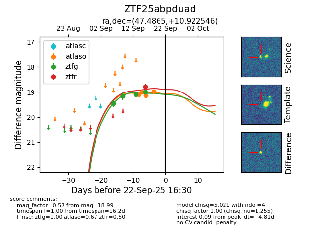
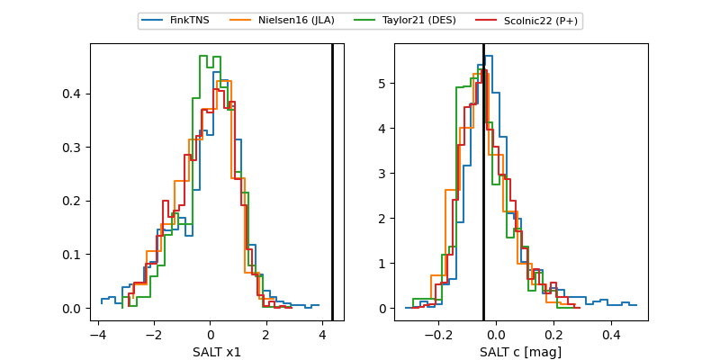

FINK: ZTF25abpduad
Lasair: ZTF25abpduad
ALeRCE: ZTF25abpduad
ZTF25abpduad (ztf,fink)
equatorial (ra, dec) = (47.4865,+10.92255)
galactic (l, b) = (169.0246,-39.24777)


last atlaso=18.99, ztfg=19.01, ztfr=18.78
4 atlaso, 4 ztfg, 1 ztfr detections